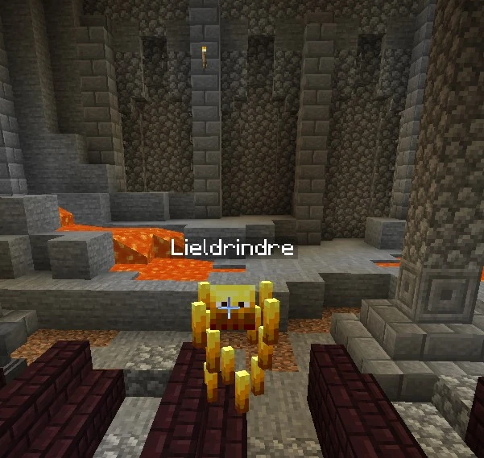
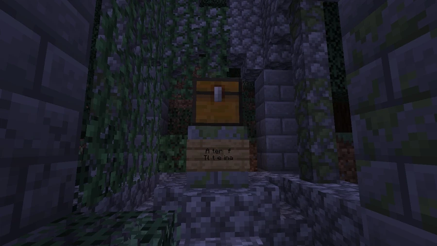

Lieldrindre, Goddess of Fire
895, 70, 2145
A voice threatens anyone who disturbs the altar south of the military base.
Where to begin
The altar stands in the ruins south of the military base, at 895, 70, 2145. The name spoken by the voice is Lieldrindre; the community entry uses Leildrindre, while the credits use Leildrindre_.


.jpg){kind=link}
Creator and character
Leildrindre is described as one of the map's main creators and a development team member responsible for redstone and ideas. The creator also has an in-world divine character, the Goddess of Fire. The community account describes the creator as apparently male, while the character is explicitly a goddess.
Another location bearing the name is Leildrindre's Secret Laboratory in the mountains. A sign marks its entrance; the room contains redstone and piston lighting systems. No coordinates are supplied for this laboratory.



Spoiler warningReveal solution and ending
Activating the altar
Opening a chest in the ruins activates command blocks that trigger the encounter. A disembodied voice asks how the visitor dares disturb her altar, identifies herself as Lieldrindre, Goddess of Fire, and threatens to incinerate them. The boss appears as an enhanced Blaze.
Boss characteristics
| Attribute | Description |
|---|---|
| Maximum health | 150 HP |
| Equipment | Golden chestplate with Protection IV, Thorns III, and the Unbreakable tag, which makes it unbreakable |
| Permanent effects | Fire Resistance II, Resistance II, Speed II, and Strength II |
The Magma Gems are at 898, 27, 2139.
See also
Sources and references
- v11.4.4 maps, signs, books and items World records
- Leildrindre · Broville Wiki Community archive
Text adapted and expanded from Leildrindre (contributors and history, revision 5004). Adapted text is available under CC BY-SA 3.0.